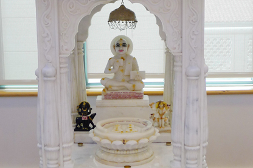

One building, five shrines, five living traditions.
16,625 square feet across four storeys and a cellar in Elmhurst — every major Jain tradition worships under the same roof. Here's where everything is, and what to know before you come.
Floor by floor
Tap a floor to jump to what's there.

Dadawadi Temple
A footprint shrine honoring the Dada Gurus, revered across Shvetambar lineages — a 15-inch idol and 7-inch charan (footprint) set in an open marble pavilion.
The same floor holds the Asthapad Maha Tirth — a ten-ton-plus crystal and gemstone recreation of the twenty-four Tirthankaras, still underway — the Roof Garden, and the Dining Hall & Kitchen, which seats over 150 for community meals.

Adinathji Temple
Home to the Digambar tradition — unadorned marble idols of the first Tirthankara, Adinath, ranging 25 to 51 inches, reflecting the "sky-clad" practice of renunciation.

Shrimad Rajchandra Hall
A meditation and study hall centered on a 60-by-30-inch marble memorial to Shrimad Rajchandra, the teacher whose writings on self-realization shaped a young Gandhi's practice of ahimsa.
The same floor holds the Library — an expanding collection of Jain texts and shastras, home to weekly Pathshala classes and a Scholar's Room for visiting Sadhu, Sadhvi and scholars.

Mahavir Swami Temple
The main sanctum, in the Shvetambar Murtipujak tradition of image worship — white marble idols from 21 to 81 inches, a crystal-stone Navkar Mantra measuring 4 by 6 feet, and daily aarti and abhishek.

Upashray Lecture Hall
The Sthanakvasi tradition worships without idols, centering instead on the Navkar Mantra itself. This lecture hall seats about 200 for pravachan and swadhyay — study and self-reflection.
Welcome & Reception
Front and back vestibules, two coat and shoe rooms, restrooms, a welcome and reception desk, a small office with security and A/V, and a seating area for the Senior Group.
Youth Center & Art Gallery
A multipurpose hall for meetings and conferences, the Youth Center, a computer area, a mini theatre, a children's room, and an art gallery with rotating exhibits.
New to a Jain temple? Here's what to expect
No background or membership is needed to visit, take darshan, or ask questions — everyone is welcome at the door, any day, 7 AM to 7 PM.
Leave shoes at the entrance
Racks are provided in the first-floor vestibule — this applies to every visitor, every time, in every shrine.
Dress modestly
Shoulders and knees covered is appreciated throughout the building.
A simple greeting
"Jai Jinendra" is the customary greeting exchanged on arrival — devotees are glad to teach it if you're unsure.
Quiet during aarti
Photography is welcome between rituals. During aarti itself, phones stay silent and put away.
Ask anything
Reception on the first floor can answer questions or point you to someone who can — there's no wrong question.
Built in 2005, and still growing
The Elmhurst facility opened in June 2005 and was named Best Religious Building of the year in Queens. A 360° tour of every shrine is available on request at the welcome desk — ask at reception on your first visit.
Street parking is available nearby; a lot serves visitors on festival days. Full directions are on the Contact page.